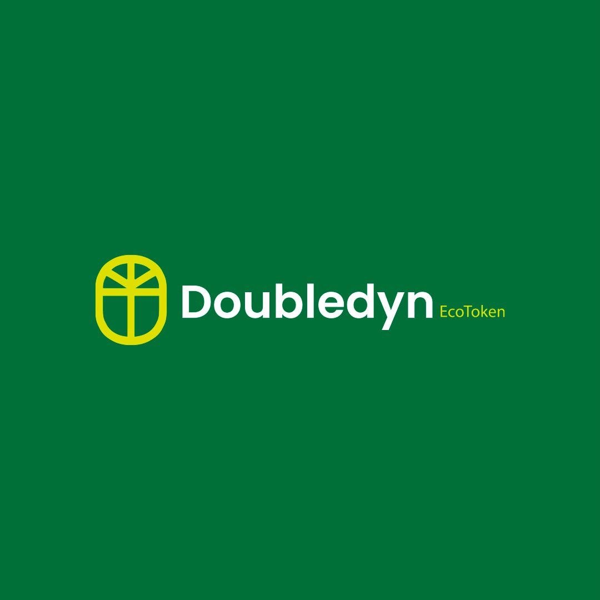
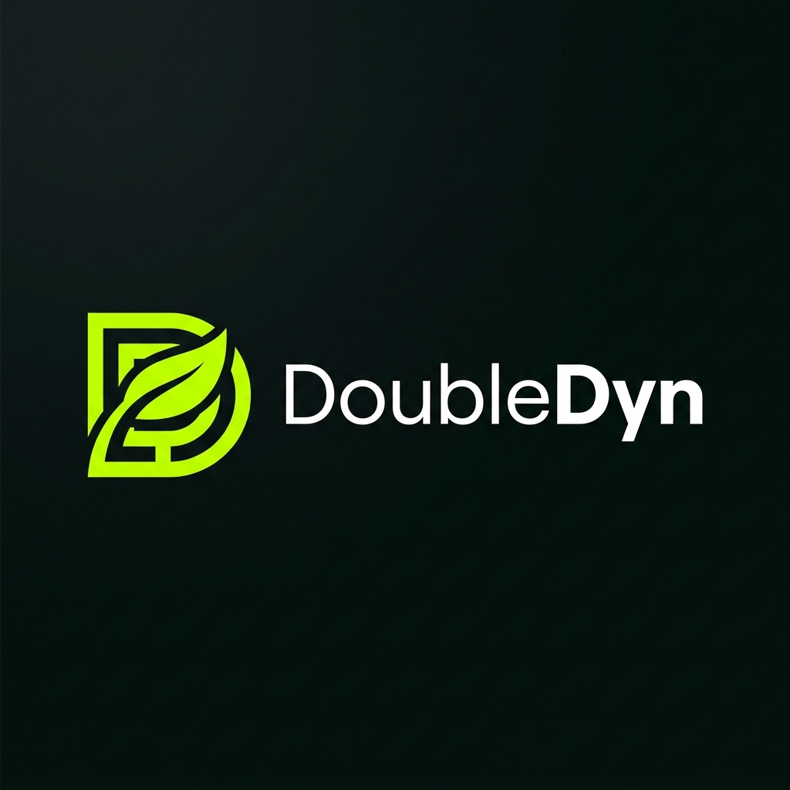

Pitch Deck · 2026
Sistema Brasileiro de Comércio de Emissões — novas exigências regulatórias
Pressões de investidores e consumidores por transparência
Empresas precisarão comprovar alegações ambientais de forma auditável
Recentemente, grandes empresas enfrentaram condenações milionárias relacionadas a alegações ambientais sem comprovação adequada.
O resultado: condenação milionária e danos reputacionais significativos.
Não basta dizer que é sustentável.
É preciso provar.
Nossa tecnologia ajuda empresas, investidores e gestores públicos a identificar ativos ambientais confiáveis, reduzindo riscos regulatórios, financeiros e reputacionais.
Avaliamos ativos ambientais utilizando critérios científicos e tecnológicos.
O objetivo é transformar ativos ambientais em ativos verificáveis, auditáveis e confiáveis.
Rigor técnico e metodológico
Dados transformados em decisões
Transparência e auditoria
Preparação regulatória
Segurança e integridade
Minas Gerais · Realizada desde 1931 · Patrimônio cultural da região
Validamos todo o processo de inventário, rastreabilidade, curadoria e governança ambiental em um cenário real.
Os vencedores do mercado ambiental não serão
aqueles que gerarem mais créditos de carbono.
Serão aqueles que gerarem
mais confiança.
O mercado não sofre pela falta de créditos.
Sofre pela falta de confiança nos créditos que compra.
Diego Augusto
Rony Costa
Pedro Augusto
Raphaela Oliveira

+55 11 92452-6590
doubledyn.com
DoubleDynaapp@gmail.com
📸 @doubledynapp
Muito obrigado.